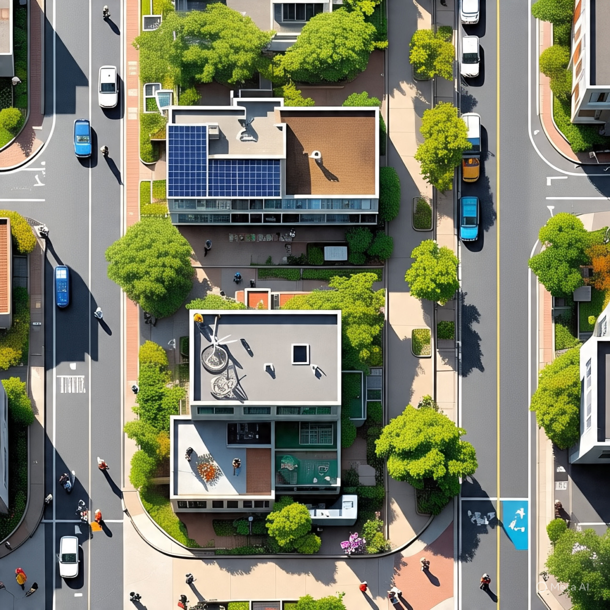

Um projeto para transformar o presente e construir o futuro
Este projeto tem como objetivo principal promover a conscientização sobre a importância da sustentabilidade nas cidades e comunidades, alinhado ao Objetivo de Desenvolvimento Sustentável 11 da ONU, que busca tornar as cidades inclusivas, seguras, resilientes e sustentáveis.
Através da pesquisa de problemas locais, como a falta de áreas verdes, a mobilidade urbana deficiente e a desigualdade no acesso a espaços públicos, propusemos soluções práticas que envolvem a participação ativa da comunidade, a implementação de hortas comunitárias, a ampliação de ciclovias e a criação de campanhas de conscientização ambiental.
Além disso, o projeto destaca a necessidade de políticas públicas eficazes e a integração entre os setores público e privado para garantir a melhoria contínua da qualidade de vida urbana, incentivando o desenvolvimento de espaços mais verdes, acessíveis e socialmente inclusivos para todos os cidadãos.
